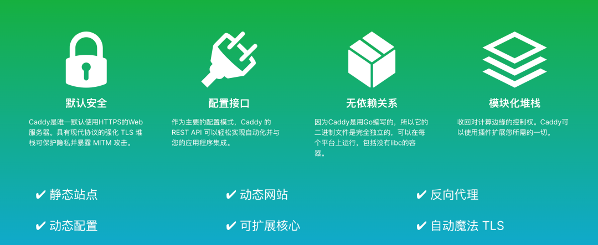
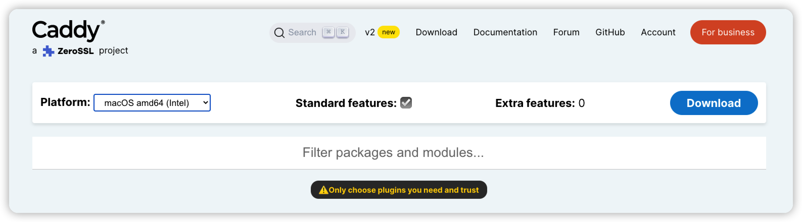
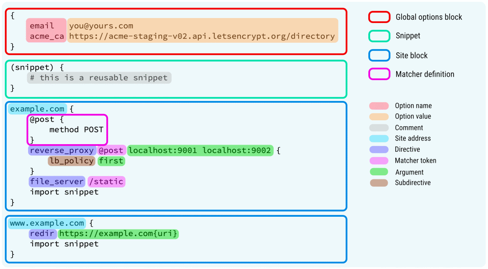
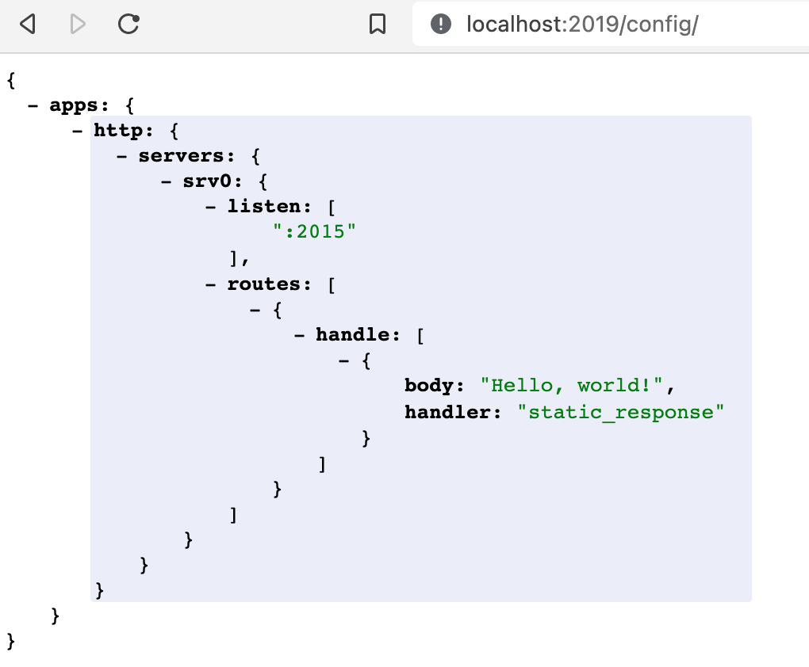

声明：文章部分内容转自 HelloGitHub 微信公众号！
众所周知，Web 服务器是 Web 开发中不可或缺的基础服务，在开发中经常会用到。耳熟能详的开源 Web 服务器有久负盛名的 Apache、性能强劲的 Nginx。而我们今天要介绍的开源项目是采用 Go 编写的 Web 服务端“后起之秀”：Caddy 它拥有下载无需安装就能用、零配置实现 HTTPS 等特点，从而在强者如云的 Web 服务器中占据了一席之地。
在这个 HTTPS 必选的时代，Caddy 凭借无需额外配置自动 HTTPS，分分钟完成 HTTPS 站点搭建，使它成为了中小型 Web 服务的首选服务器。Caddy 深受开源爱好者们的喜爱，2014 年开源至今共收获了 4.2 万颗星。

1. Caddy 功能介绍
Caddy是一个强大的、可扩展的平台，可以为您的站点、服务和应用程序提供服务。
使用 Caddy 可以在 Linux、Mac、Windows 上快速部署 http(s) 站点或反向代理服务。支持：
HTTP/1.1和HTTP/2- 同时接受
HTTPS自动签发和手动管理 - 虚拟主机 (多个站点工作在单个端口上)
- 原生
IPv4和IPv6支持 - 静态文件分发
- 平滑重启/重载
- 反向代理 (
HTTP或WebSocket) - 负载均衡和健康性检查
Markdown渲染- 文件浏览服务
- 等等
与传统的 Nginx 或者 Apache 相比，Caddy 整体只有一个可执行文件，安装便捷不易出现奇怪的依赖问题，配置文件结构清晰语法简单易于上手，依托于模块化架构可以使用 Go 语言快速开发扩展模块。
- Easy configuration with the Caddyfile
- Powerful configuration with its native JSON config
- Dynamic configuration with the JSON API
- Config adapters if you don’t like JSON
- Automatic HTTPS by default
- ZeroSSL and Let’s Encrypt for public names
- Fully-managed local CA for internal names & IPs
- Can coordinate with other Caddy instances in a cluster
- Multi-issuer fallback
- Stays up when other servers go down due to TLS/OCSP/certificate-related issues
- Production-ready after serving trillions of requests and managing millions of TLS certificates
- Scales to tens of thousands of sites … and probably more
- HTTP/1.1, HTTP/2, and experimental HTTP/3 support
- Highly extensible modular architecture lets Caddy do anything without bloat
- Runs anywhere with no external dependencies (not even libc)
- Written in Go, a language with higher memory safety guarantees than other servers
- Actually fun to use
- So, so much more to discover
2. Caddy 工具安装
使用的是 Ubuntu 的机器，介绍自动安装和手动安装！

- 镜像部署
# https://hub.docker.com/_/caddy
$ docker pull caddy
- 自动安装
# Debian, Ubuntu, Raspbian
$ sudo apt install -y debian-keyring debian-archive-keyring apt-transport-https
$ curl -1sLf 'https://dl.cloudsmith.io/public/caddy/stable/gpg.key' | sudo gpg --dearmor -o $ /usr/share/keyrings/caddy-stable-archive-keyring.gpg
$ curl -1sLf 'https://dl.cloudsmith.io/public/caddy/stable/debian.deb.txt' | sudo tee /etc/apt/sources.list.d/caddy-stable.list
$ sudo apt update
$ sudo apt install caddy
# Fedora, RedHat, CentOS
$ dnf install 'dnf-command(copr)'
$ dnf copr enable @caddy/caddy
$ dnf install caddy
- 手动编译
# Go 1.17 or newer
$ git clone "https://github.com/caddyserver/caddy.git"
$ cd caddy/cmd/caddy/
$ go build
- 手动下载
# https://caddyserver.com/download
$ mv caddy_linux_amd64 caddy
$ sudo chmod a+x caddy
$ mv caddy /bin/caddy
$ caddy version
通过命令行 apt 工具安装的 caddy 会自己生成部分配置文件，这种方式安装完成后会启动服务，开机自动启动。
- 配置文件
# 服务自启动配置
/lib/systemd/system/caddy.service.
# 配置文件内容
$ cat /lib/systemd/system/caddy.service
[Service]
ExecStart=/usr/bin/caddy run --environ --config /etc/caddy/Caddyfile
ExecReload=/usr/bin/caddy reload --config /etc/caddy/Caddyfile --force
# 服务启动的主配置文件
$ cat /etc/caddy/Caddyfile
:80 {
# Set this path to your site's directory.
root * /usr/share/caddy
# Enable the static file server.
file_server
# Another common task is to set up a reverse proxy:
# reverse_proxy localhost:8080
}
- 二进制文件
# caddy
/usr/bin/caddy
3. Caddy 简单上手
安装完成之后，简单介绍下基本的使用方式！
这里将从 Caddy 常用命令开始，再到配置讲解，最后会通过一个实际案例来展示如何用 Caddy 配置网站和上线。
- 常用命令
$ caddy
Caddy is an extensible server platform.
usage:
caddy <command> [<args...>]
commands:
adapt 指定配置文件 Adapts a config to Caddy native JSON
add-package 添加扩展 Adds Caddy packages (EXPERIMENTAL)
build-info 输出build信息 Prints information about this build
environ 展示环境Prints the environment
file-server 启动文件服务 Spins up a production-ready file server
fmt 格式配置文件 Formats a Caddyfile
hash-password 生成Hash密码 Hashes a password and writes base64
help 帮助 Shows help for a Caddy subcommand
list-modules 列出已安装模块 Lists the installed Caddy modules
reload 重载配置并重启 Changes the config of running Caddy instance
remove-package 删除扩展 Removes Caddy packages (EXPERIMENTAL)
reverse-proxy 启动反向代理 A quick and production-ready reverse proxy
run 启动服务(前台) Starts the Caddy process
start 启动服务(后台) Starts the Caddy process
stop 停止服务 Gracefully stops a started Caddy process
trust 添加信任 Installs a CA cert into local trust stores
untrust 删除信任 Untrusts a locally-trusted CA certificate
upgrade 升级版本 Upgrade Caddy (EXPERIMENTAL)
validate 校验配置是否合法 Tests whether a config file is valid
version 输出版本信息 Prints the version
Use 'caddy help <command>' for more information about a command.
Full documentation is available at:
https://caddyserver.com/docs/command-line
Caddy 的原生配置文件使用的是 JSON 格式，但是为了用户编写方便它提供了 Caddyfile 作为接口让用户可以快速配置站点信息，运行时 Caddy 会自动将 Caddyfile 的配置信息转为 JSON 配置文件。Caddyfile 所能提供功能不如 JSON 配置文件强大，但是对于不需要复杂配置的用户而言完全够用了。
- 配置文件
# matcher代表匹配器
# 如果提供则该指令将只对 matcher 描述的资源进行响应
directive [<matcher>] <args...> {
subdirective [<args...>] # 子指令
}
- 文件结构

4. Caddy 简单演示
简单演示，来解释配置文件的编写以及命令工具的使用！
下面将演示如何用 Caddy 搭建站点，加深理解配置格式和命令使用。
# 目录结构
.
├── Caddyfile
├── index.html
└── public
└── HG.html
<!-- index.html -->
<!DOCTYPE html>
<html lang="en">
<head>
<meta charset="UTF-8" />
<title>Hello World!</title>
</head>
<body>
你好，世界！
</body>
</html>
<!-- HG.html -->
<!DOCTYPE html>
<html lang="en">
<head>
<meta charset="UTF-8" />
<title>HelloGitHub</title>
</head>
<body>
HelloGitHub
</body>
</html>
# Caddyfile
http://localhost:3000 {
basicauth /public/* {
# 匹配localhost:3000/public/*的请求为加上登陆保护
# 用户名HG密码HelloGitHub
# 密码使用 caddy hash-passowrd 指令生成
HG JDJhJDE0JGxxxBNGJt
}
# 设置当前站点根目录为当前文件夹，*表示匹配所有的请求
root * ./
templates
# 配置当前站点为静态文件服务器，可用于博客系统的搭建
file_server {
# 隐藏所有的 .git 文件
hide .git
}
}
:4000 {
# 配置反向代理(匹配请求转发到)
reverse_proxy /public/* http://localhost:3000
}
# 启动服务
$ caddy run
# 测试
http://localhost:3000
http://localhost:3000/public/HG.html
http://localhost:4000
Caddy 除了简单易懂的配置文件方式，还提供了管理配置的接口。通过这些接口可以轻松实现 Web 服务器管理自动化、集成发布等高级功能。
POST /load设置或替换活动配置POST /stop停止活动配置并退出进程GET /config/[path]导出指定路径的配置POST /config/[path]设置或替换对象；追加到数组PUT /config/[path]创建新对象或插入数组PATCH /config/[path]替换现有对象或数组元素DELETE /config/[path]删除指定路径的值- 在
JSON中使用@id轻松遍历配置结构 GET /reverse_proxy/upstreams返回配置的代理上游的当前状态

5. Caddy 域名加密
从零完成 HTTPS 站点
第一步：安装，采用上面介绍的命令安装
第二步：设置域名解析地址，在购买域名的网站设置，设置 A 记录。
# 设置完生效需要几分钟，可通过下面的命令检查是否生效
$ curl "https://cloudflare-dns.com/dns-query?name=caddy.escapelife.site&type=A" -H "accept: application/dns-json"
第三步：创建配置文件 Caddyfile，无需额外的开启 HTTPS 的设置。
# 域名和访问返回的内容
caddy.escapelife.site
respond "Hello HTTPS！"
第四步：启动然后看效果
# 在同一目录下执行命令
# 访问 caddy.escapelife.site 检验效果
$ sudo caddy run
6. Caddy 容器使用
介绍容器使用 Caddy 服务的相关配置和注意事项
- 配置信息
# Data directory(/data)
$HOME/.local/share/caddy
# Config directory(/config)
$HOME/.config/caddy
- Basic Usage
# The default config file simply serves files
$ echo "hello world" > index.html
$ docker run -d -p 80:80 \
-v $PWD/index.html:/usr/share/caddy/index.html \
-v caddy_data:/data \
caddy
...
$ curl http://localhost/
hello world
# To override the default Caddyfile
$ docker run -d -p 80:80 \
-v $PWD/Caddyfile:/etc/caddy/Caddyfile \
-v caddy_data:/data \
caddy
- Automatic TLS
# its A/AAAA DNS records to public IP
$ docker run -d -p 80:80 -p 443:443 -p 443:443/udp \
-v /site:/srv \
-v caddy_data:/data \
-v caddy_config:/config \
caddy caddy file-server --domain example.com
- Building your own Caddy-based image
FROM caddy:
COPY Caddyfile /etc/caddy/Caddyfile
COPY site /srv
- Adding custom Caddy modules
FROM caddy:-builder AS builder
RUN xcaddy build \
--with github.com/caddyserver/nginx-adapter \
--with github.com/hairyhenderson/caddy-teapot-module@v0.0.3-0
FROM caddy:
COPY --from=builder /usr/bin/caddy /usr/bin/caddy
- Docker Compose example
version: "3.7"
services:
caddy:
image: caddy:<version>
restart: unless-stopped
ports:
- "80:80"
- "443:443"
- "443:443/udp"
volumes:
- $PWD/Caddyfile:/etc/caddy/Caddyfile
- $PWD/site:/srv
- caddy_data:/data
- caddy_config:/config
volumes:
caddy_data:
external: true
caddy_config:
7. Caddy 思考总结
送人玫瑰，手有余香！
看到这里你应该对 Caddy 有了一些了解，有没有一种相见恨晚的感觉？虽然它的性能比不了 Nginx 但如果论上手的难易度，Caddy 甩 Nginx 几条街！主要是默认开启 HTTPS 功能太香了，你什么都不用管就可以免费、快速、轻松开启网站 HTTPS。